Собаки против баннерной слепоты! Как шпицы помогли вытащить 405 заявок в ресторан
Инструменты & Стек
VK Ads (кабинет таргетированной рекламы), Яндекс Метрика (сквозная разметка по UTM-дереву Campaign / Content / Term), Wi-Fi радар, парсинг баз и LAL-аудитории, матрица A/B-гипотез
Итоговые результаты двух направлений
- Дни рождения (ДР)
- 154 лида
- Расход 58 350 ₽ · CPA 379 ₽
- Бизнес-ланчи (БЛ)
- 251 лид
- Расход 38 800 ₽ · CPA 155 ₽
- Совокупно по двум воронкам
- 405 конв.
- При общем бюджете 97 150 ₽
- Средний CTR в VK Ads
- 3,17%
- eCPC от 1,37 ₽ до 2,04 ₽
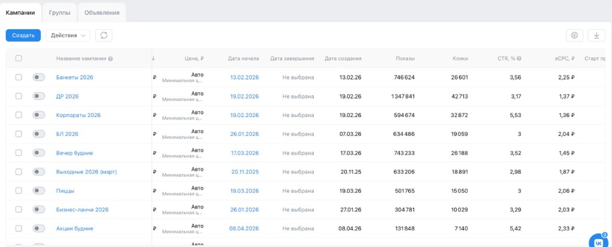
Контекст проекта и разделение двух воронок
«Ева Ела» — двухэтажный ресторан в центре Воронежа (ул. Комиссаржевская, 7, рядом с кинотеатром «Юность»). Заведение объединяет два принципиально разных по экономике продукта, под каждый из которых требовалась отдельная рекламная архитектура:
- Дни рождения и праздники (High-Check): высокий средний чек и длинный цикл выбора площадки. Главная задача — поймать пользователя в узкое «окно принятия решения» за 1–2 недели до даты, показать вариативность залов (от камерного кабинета до закрытия всего ресторана на 100 человек) и дать понятный триггер к бронированию.
- Бизнес-ланчи (Frequency & Local): загрузка дневной посадки в будни среди тех, кто работает, учится или часто бывает в центре. Здесь решают скорость подачи («обед за 30 минут у Юности»), ценовой якорь и эмоциональные крючки, которые выделяют заведение среди соседних ресторанов.
Чтобы не оценивать кампании «вслепую» по кликам в кабинете VK Ads, для каждого сегмента и объявления была внедрена иерархическая UTM-разметка с передачей целевых действий в Яндекс Метрику: верхний уровень (dr и bl) раскладывается до конкретной аудитории и номера объявления (socharki, retarget, vk2…vk9).
Направление 1. Бизнес-ланчи: сегментация аудиторий и A/B-тесты
На привлечение гостей в обеденное время было направлено 38 800 ₽, что принесло 251 целевую конверсию по средней цене ~155 ₽ за лид. Трафик разделили на три ключевых аудиторных сегмента с разным уровнем «теплоты»:
| Сегмент (UTM) | Механика и таргетинг | Конверсии (Метрика) | Доля в воронке |
|---|---|---|---|
retarget (Ядро и тёплые базы) |
Посетители сайта, look-alike, регулярно обновляемая база телефонов, сбор по Wi-Fi радару, подписчики прямых конкурентов в центре (Seven, Олень, Вера Федоровна) и воронежских гастро-пабликов. | 102 конверсии (2,28% от всех целей) | 40,6% от всех БЛ |
intbaryrest (Локальные гастро-интересы) |
Жители и сотрудники/студенты с регулярным гео «работа или учёба в центре Воронежа» + интересы «Рестораны и кафе», «Еда и кулинария», «ЗОЖ», «Бизнес». | 81 конверсия (1,81% от всех целей) | 32,3% от всех БЛ |
inttravel (Интерес «Путешествия») |
Тест широкой смежной аудитории с привязкой к концепции ресторана путешественницы Евы и локации у центрального кинотеатра. | 68 конверсий (1,52% от всех целей) | 27,1% от всех БЛ |
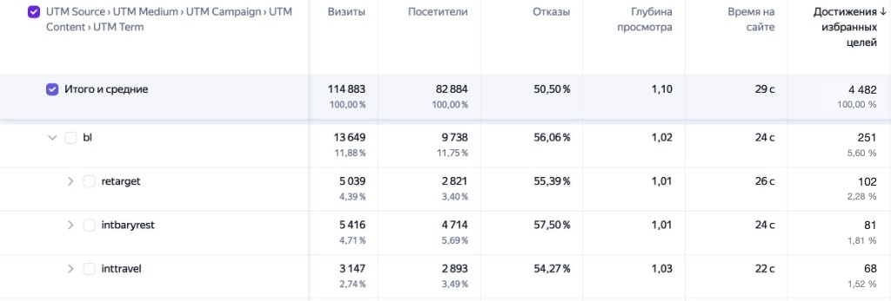
utm=bl): 251 целевая конверсия — лидерство за тёплой связкой retarget (102) при сильной поддержке интересов к барам и ресторанам (81).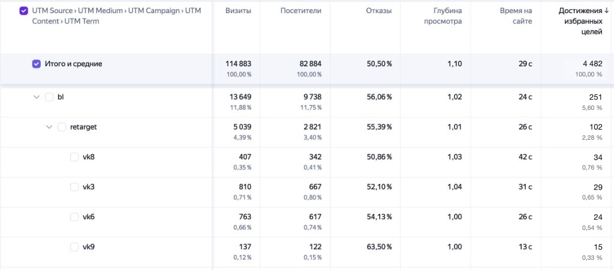
retarget (102 конв.): на знакомой аудитории лучше всего дожимают обновление меню (vk8 — 34), соц. доказательство (vk3 — 29) и офисный оффер (vk6 — 24).A/B-тестирование гипотез и креативов в VK Ads
Для кампании по обедам была подготовлена матрица из 15 текстово-графических связок (VK 1–VK 15): тестировали неформальное приглашение, близость к к/т «Юность», скорость подачи («за 30 минут»), ценовой якорь («от 490 ₽ + напиток в подарок»), социальное доказательство («1000+ воронежцев») и dog-friendly позиционирование («Можно с хвостиком»).
В прямом сплит-тесте трёх разных смысловых углов на сопоставимых бюджетах (~3,7–4,0 тыс. ₽ на объявление) чётко проявилась разница между кликабельностью на холодном охвате и финальной конверсионностью в ретаргетинге:
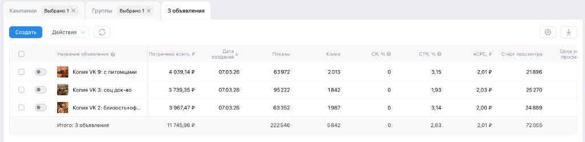
| Объявление в тесте | Тестируемый оффер / триггер | CTR / eCPC | Роль в воронке |
|---|---|---|---|
| VK 9: «Можно с хвостиком» | Dog-friendly кафе + живые фото гостей с собаками (такса, сиба-ину, шпиц) вместо стандартных тарелок. | CTR 3,15% eCPC 2,01 ₽ · 2 013 кликов |
Абсолютный лидер по пробитию баннерной слепоты в ленте: притягивает лояльный трафик и даёт 15 дожимов в ретаргетинге. |
| VK 2: «Обед за 30 минут» | Снятие главной боли офиса — дефицита времени («у к/т Юность, быстрая кухня + напиток в подарок»). | CTR 3,14% eCPC 2,00 ₽ · 1 987 кликов |
Лучшая цена клика (2,00 ₽) и высокий процент вовлечения — базовый локомотив на холодных локальных аудиториях. |
| VK 3: «1000+ воронежцев» | Социальное доказательство + еженедельное обновление меню + точный адрес (Комиссаржевская 7). | CTR 1,93% eCPC 2,03 ₽ · 1 842 клика |
На холодном трафике CTR ниже, но в ретаргетинге даёт 29 конверсий (№2 после новизны меню vk8 — 34 конв.): тёплым гостям важно видеть живой зал и масштаб доверия. |
Визуальный сплит победителя по CTR — линейка VK 9 (dog-friendly формат):
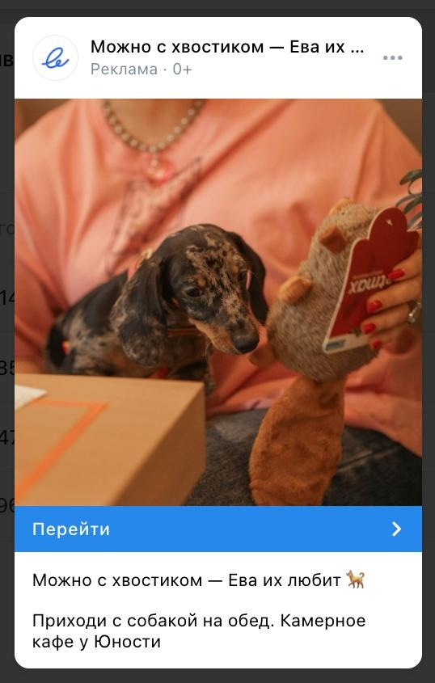
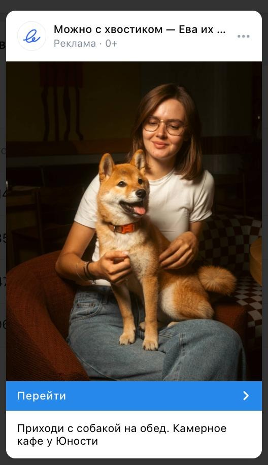
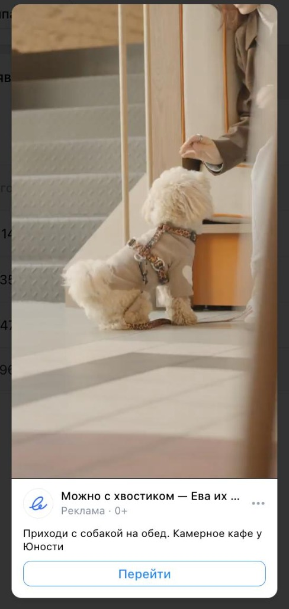
Рациональные и ретаргетинговые связки бизнес-ланчей (скорость, цена и социальное доказательство):
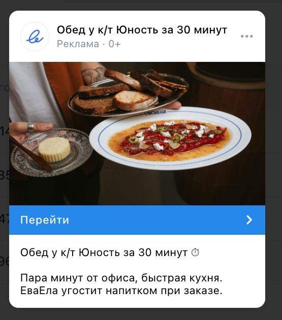
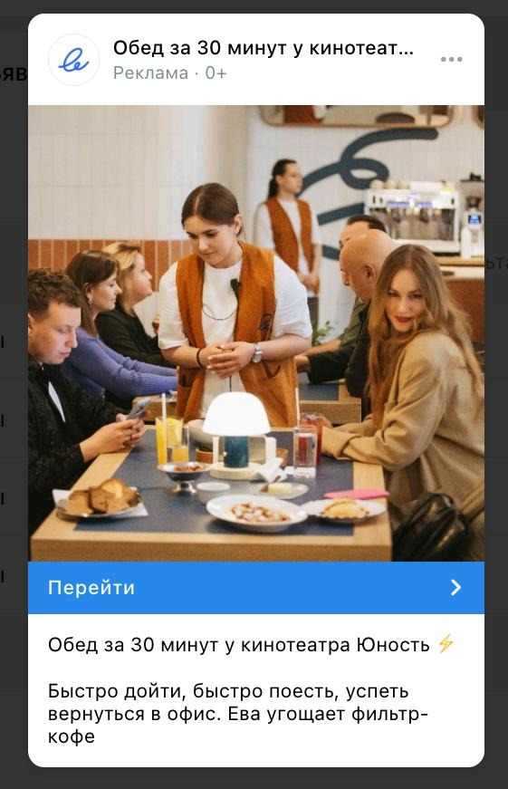
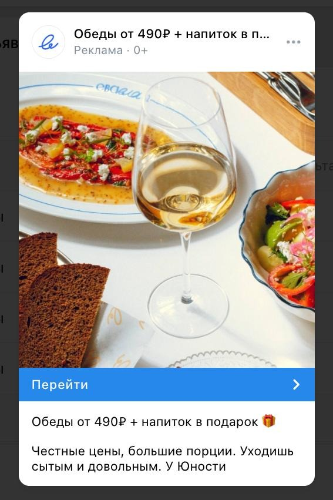
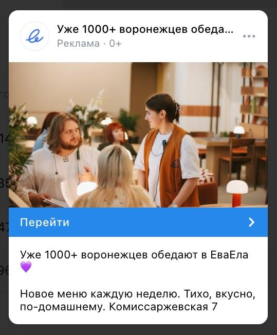
Направление 2. Дни рождения: гиперсегментация спроса и оцифровка форматов
В кампании «ДР 2026» бюджет составил 58 350 ₽ (58 351,60 ₽ в отчёте групп VK Ads), охваты превысили 1,34 млн показов при CTR 3,17% и цене клика 1,37 ₽. По данным Яндекс Метрики связка принесла 154 целевые конверсии со стоимостью обращения ~379 ₽.
Вся воронка строилась на сильном базовом УТП: скидка 15% на весь бар за 7 дней до и 7 дней после даты праздника + кусок торта со свечкой в подарок. Внутри группы аудиторий разделили на три точечных вектора:
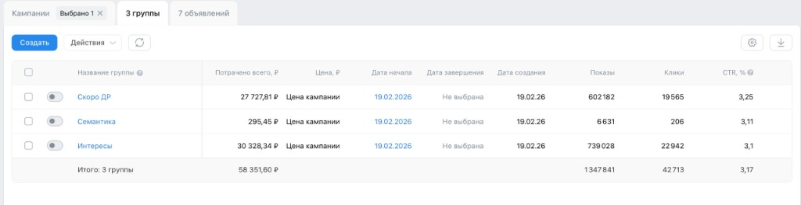
| Группа / Аудитория | Логика отбора и бюджет | Визиты / Конверсии | Эффективность |
|---|---|---|---|
Скоро ДР (socharki) |
Сверхгорячий сегмент: пользователи ВКонтакте со скорым днём рождения. Расход 27 727,81 ₽, CTR 3,25%. | 8 869 визитов → 99 конверсий (2,21%) | Основной драйвер: даёт 64,3% всех лидов по ДР при минимальной цене привлечения (~280 ₽ за конверсию). |
Интересы (interes) |
Широкий масштаб на интересующихся кафе, ресторанами, досугом и организацией праздников. Расход 30 328,34 ₽, CTR 3,10%. | 9 314 визитов → 49 конверсий (1,09%) | Позволяет удерживать объём показов (739 тыс.), когда база ближайших именинников по Воронежу выгорает. |
Семантика (semantika) |
Контекстный таргетинг в VK по поисковым запросам «где отметить ДР», «ресторан для дня рождения». Расход 295,45 ₽. | 78 визитов → 6 конверсий (0,13%) | Самая высокая конверсия из визита в заявку (7,69%) и сверхдешёвый лид (~49 ₽), ограничена лишь ёмкостью локального спроса. |
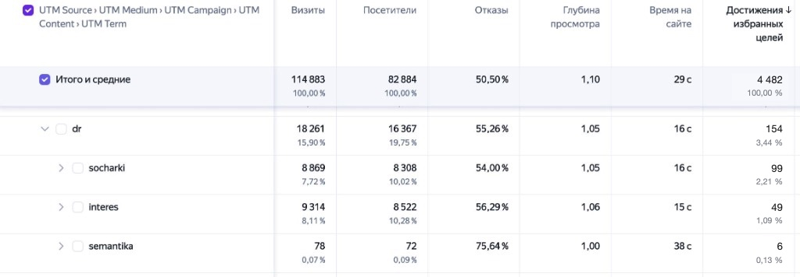
utm=dr): 154 конверсии — 99 со socharki, 49 с интересов и 6 с прямой семантики.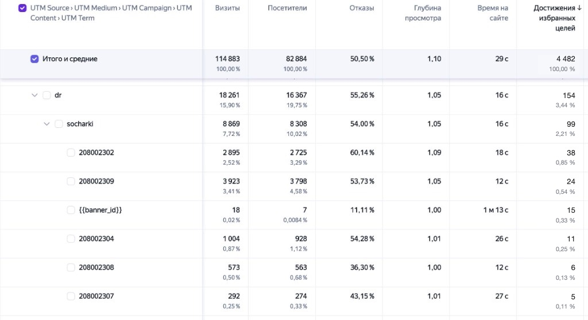
socharki тестировались 6 объявлений с разными форматами: верхние три связки собрали 77 из 99 лидов сегмента (38 + 24 + 15).Как упаковали разные сценарии праздника в креативах
Чтобы не продавать «просто стол», объявления разделили по масштабу компании: от камерного кабинета до 15 человек без депозита и второго этажа на 30–40 гостей (с 10 кранами крафта) до закрытия всего двухэтажного ресторана на 100 гостей. В качестве визуального триггера использовали живые кадры выноса праздничного торта с фейерверками-свечами и эмоциональные фото гостей в интерьере.
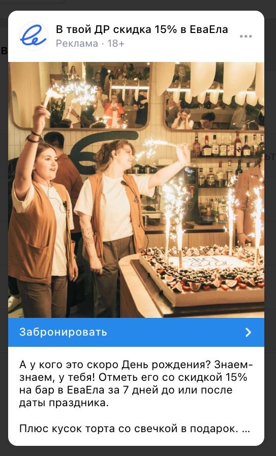
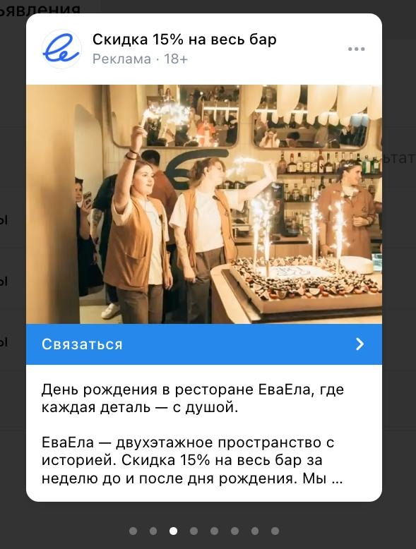
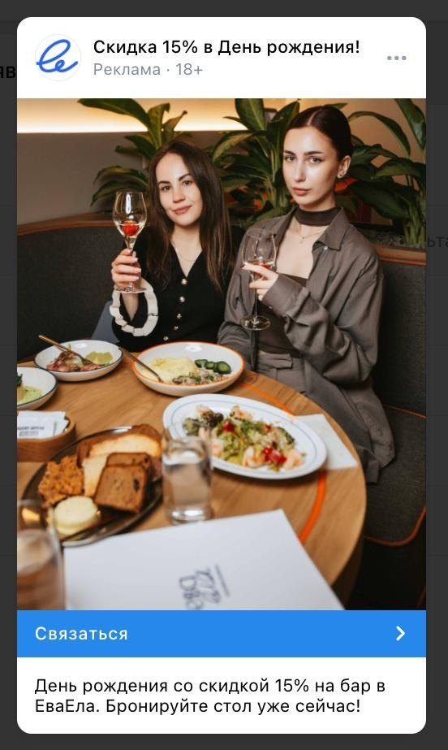
Итоговая матрица результатов
| Направление | Рекламный бюджет | Конверсии (Метрика) | Стоимость цели (CPA) | Главный драйвер |
|---|---|---|---|---|
Бизнес-ланчи (bl) |
38 800 ₽ | 251 | ~155 ₽ | Ретаргет (Wi-Fi + конкуренты + база) — 102 лида; A/B-победители VK 9 (CTR 3,15%) и VK 2 (CTR 3,14%). |
Дни рождения (dr) |
58 350 ₽ | 154 | ~379 ₽ | Аудитория именинников «Скоро ДР» (socharki) — 99 лидов (64% объёма) + семантика с CR 7,69%. |
| Итого по проекту | 97 150 ₽ | 405 | ~240 ₽ | Связка точной UTM-атрибуции, сегментации аудиторий и постоянного A/B-обновления креативов. |
Ключевые выводы по таргету для HoReCa
1. Высокий CTR не равен высокой доходимости: на холодном трафике выигрывают нестандартные триггеры («можно с собакой», «у Юности за 30 минут» — CTR 3,14–3,15%), а на тёплой базе ретаргетинга лучше всего конвертят регулярное обновление меню и социальное доказательство.
2. Таргетинг должен бить в календарный момент: в банкетах и днях рождения сбор именинников перед датой события даёт почти две трети всех заявок (99/154), тогда как общие ресторанные интересы выступают инструментом добора охвата.
3. Разделяй и властвуй в UTM: без проброса utm_campaign / utm_content / utm_term в Яндекс Метрику невозможно увидеть реальную отдачу от конкретных групп (как в примере semantika или vk8 / vk3 внутри ретаргета).